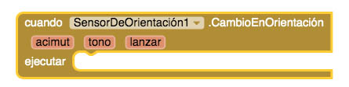
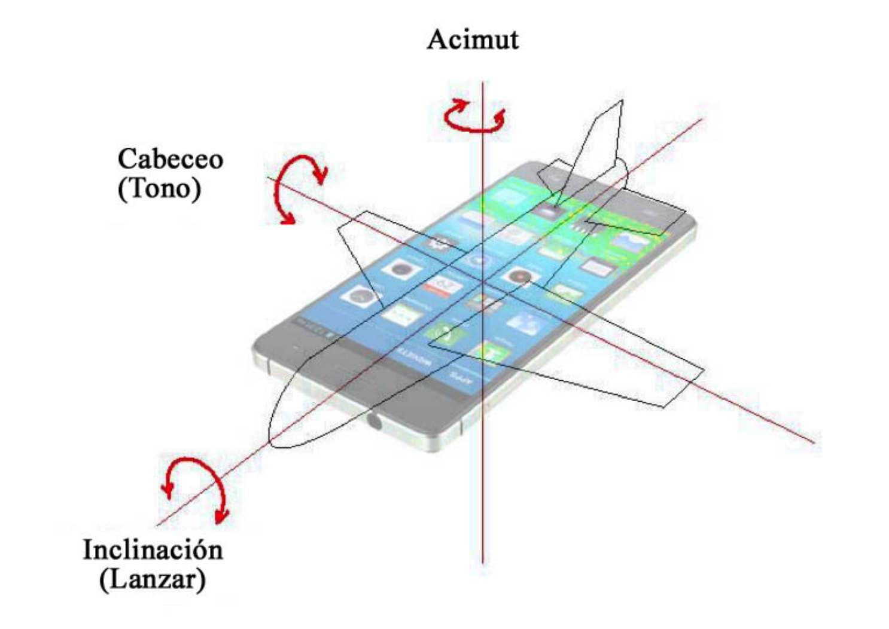

El objetivo que nos planteamos con este ejemplo es poder comprobar cómo varían los ángulos descritos (acimut, cabeceo, inclinación) cuando giramos nuestro dispositivo móvil en el espacio y, aprovechando el acimut, construirnos una brújula.
Por consiguiente, la ventana Screen1 de nuestra App estará formada por una disposición Vertical donde situaremos las etiquetas que nos mostrarán los valores de los ángulos de orientación y un Lienzo, en la parte inferior, donde colocaremos las imágenes que conforman la brújula.
De manera similar al sensor de ubicación, también disponemos de un bloque que nos permite conocer los valores recogidos por el sensor de orientación cuando se detecta algún cambio. Los nuevos ángulos de orientación se almacenan en las variables acimut, tono y lanzar.

Creamos un proyecto nuevo de nombre “brujula” (las tildes no están permitidas al nombrar un proyecto).
Subimos las imágenes que utilizaremos y que se pueden descargar aquí:
Para el icono de la App: “brujula.png”
Para SpriteImagen1: “esfera.png”
Para SpriteImagen2: “manecilla.png”
Establecemos las siguientes propiedades para Screen1:
Disposición Horizontal: Centro
Orientación de la Pantalla: Vertical
AppName: Brújula
Color de Fondo: Blanco
Título: Brújula
Icono: “brujula.png”
Es un componente no visible que proporciona información sobre la orientación física del dispositivo en tres dimensiones:

- Acimut. Es el ángulo que forma un eje longitudinal de nuestro dispositivo móvil con la dirección Norte (con el meridiano sobre el que estamos situados). Cuando la parte superior del dispositivo está orientada al Norte, el valor de Acimut es 0. Cuando apunta al Este, el valor es 90º. Cuando apunta al Sur, 180º. Hacia el Oeste, 270º.
- Cabeceo. En los bloques de programación aparece con el nombre Tono (Pitch en inglés). Su valor es 0 cuando el dispositivo está en horizontal. Aumenta hasta 90º cuando la parte superior del dispositivo apunta hacia abajo. Cuando la parte inferior del dispositivo está apuntando hacia el suelo, el cabeceo disminuye hasta -90º.
- Inclinación. En los bloques de programación aparece con el nombre Lanzar (Roll en inglés). Su valor es 0 cuando el dispositivo está horizontal y aumenta hasta 90º cuando estáapoyado en vertical sobre su lado izquierdo. Disminuye hasta -90º cuando está apoyado en vertical sobre su lado derecho